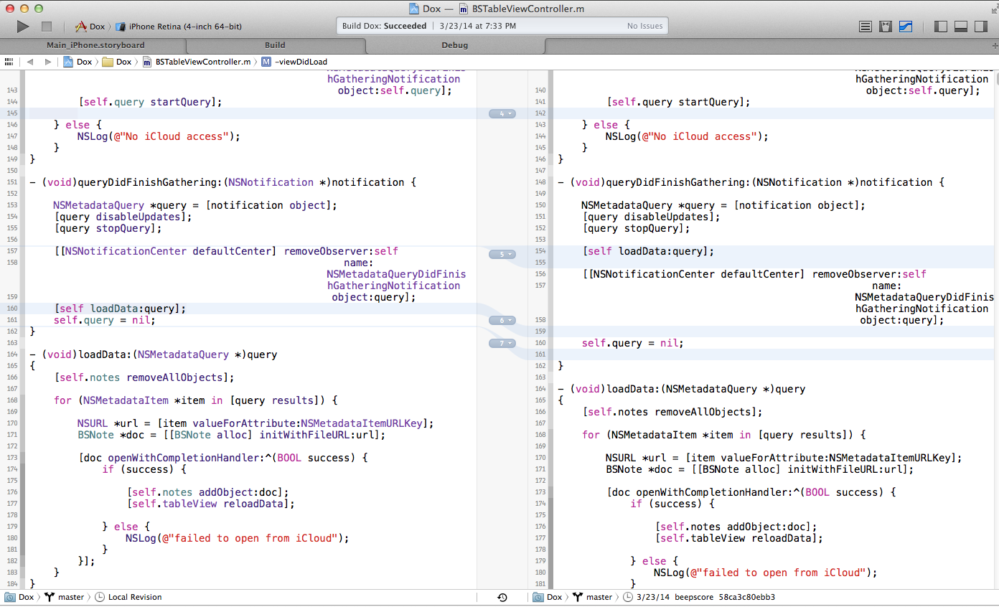
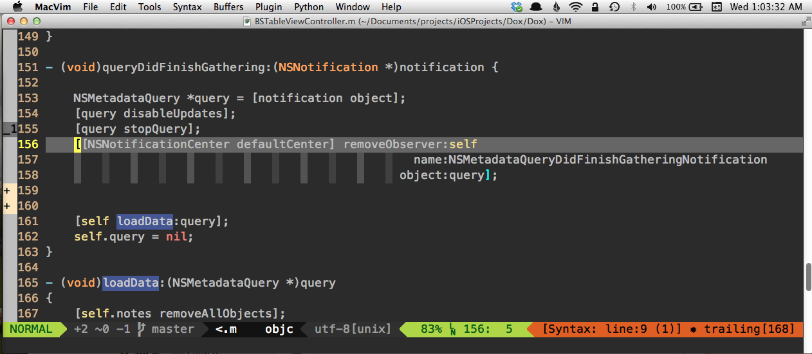
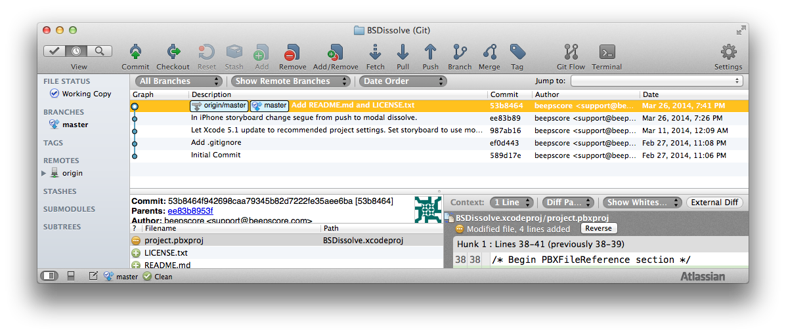
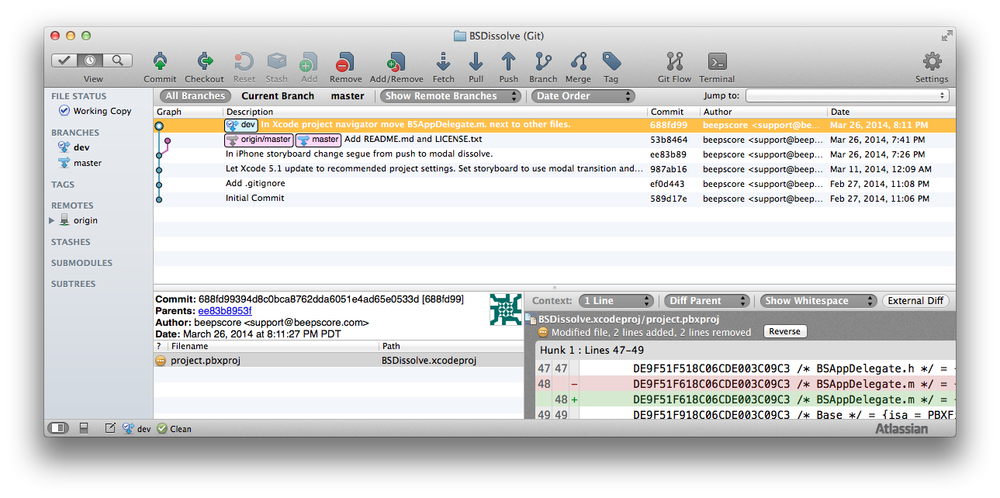
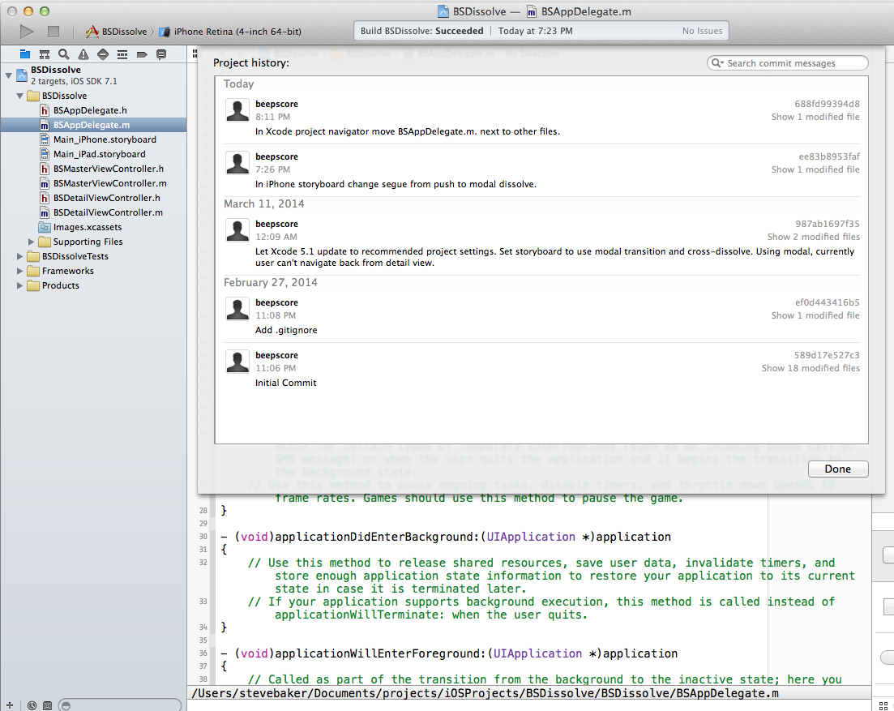
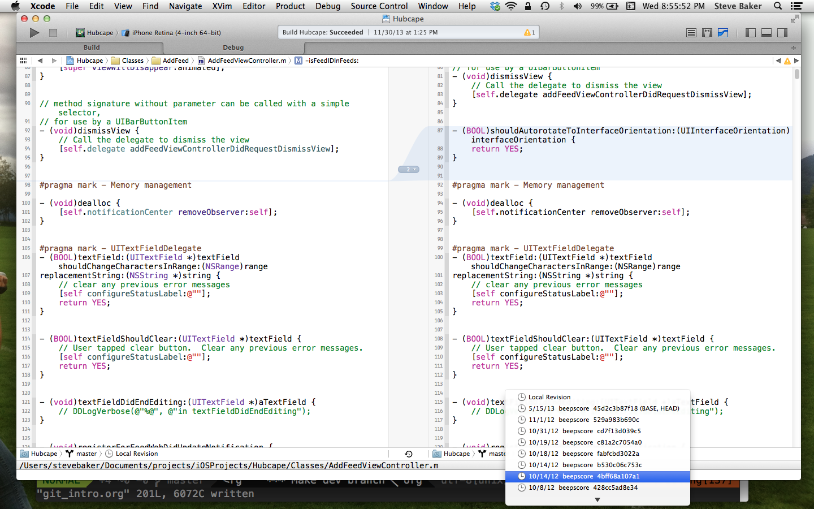

Steve Baker will talk about "git version control, in and out of Xcode" or "How to safely detach your head!"
Designed for beginning/intermediate git users.
Topics: Commit, branch, tag using SourceTree gui, Xcode, command line.
Stash, selective commit or discard changes.
Diffing changes using Xcode, SourceTree, FileMerge, MacVim.
Checking out previous versions, branch, detached head state, command line reflog.
.gitignore
Using github as a remote: push, pull.
Potential intermediate topics include reverting commits, working with other developers on multiple branches, resolving merge conflicts.
$ git initEverything in Git is check-summed before it is stored and is then referred to by a SHA-1 hash. This means it's impossible to change the contents of any file or directory without Git knowing about it.
Nodes connected by arrows. No closed loops.


List all branches
$ git branchCreate a new branch named mybranch, referencing the same point in history as the current branch
$ git branch mybranch
$ git checkout mybranchRemove some-branch from the remote repo (e.g. github)
$ git push origin :heads/some-branch
BSDissolve git:(master) git checkout ee83b8953faf44545b61488d6ab13a6df81fc19a
Note: checking out 'ee83b8953faf44545b61488d6ab13a6df81fc19a'.
You are in 'detached HEAD' state. You can look around, make experimental
changes and commit them, and you can discard any commits you make in this
state without impacting any branches by performing another checkout.
If you want to create a new branch to retain commits you create, you may
do so (now or later) by using -b with the checkout command again. Example:git checkout -b new_branch_name
HEAD is now at ee83b89... In iPhone storyboard change segue from push to modal dissolve. $ BSDissolve git:(ee83b89)

Commit 688fd99 
Shows commits not on any branch path.
$ git checkout master
53b8464 HEAD@{0}: checkout: moving from 688fd99394d8c0bca8762dda6051e4ad65e0533d to master
688fd99 HEAD@{1}: commit: In Xcode project navigator move BSAppDelegate.m. next to other files.
ee83b89 HEAD@{2}: checkout: moving from master to ee83b8953faf44545b61488d6ab13a6df81fc19a
53b8464 HEAD@{3}: checkout: moving from ee83b8953faf44545b61488d6ab13a6df81fc19a to master
ee83b89 HEAD@{4}: checkout: moving from master to ee83b8953faf44545b61488d6ab13a6df81fc19a
53b8464 HEAD@{5}: commit: Add README.md and LICENSE.txt
ee83b89 HEAD@{6}: commit: In iPhone storyboard change segue from push to modal dissolve.
987ab16 HEAD@{7}: commit: Let Xcode 5.1 update to recommended project settings. Set storyboard to use modal transition and cross-dissolve. Using modal, currently user can't navigate back from detail view.
ef0d443 HEAD@{8}: commit: Add .gitignore
589d17e HEAD@{9}: commit (initial): Initial Commit
BSDissolve git:(master) git checkout 688fd99BSDissolve git:(688fd99) git branch dev
BSDissolve git:(688fd99) git checkout dev
Xcode Source Control History

Xcode Version Editor


In bash, cd to directory that will contain the new project folder, e.g. cd MyProjects
git clone git@github.com:beepscore/BeepscoreProject.git
$ touch README
$ git add README
$ git commit -m 'first commit'
$ git push origin masteralternatively, run SourceTree
Get the latest changes from the remote, doesn't do a local commit.
$ git fetch originpull is same as fetch followed by commit.
$ git pull$ git checkout (mybranch) (filename)Or in Xcode right click on file, "discard changes". Or in SourceTree, open repository directory, at top right select Discard.
$ git reset HEAD (filename)Create a commit that undoes previous commit.
$ git revert HEADCreate a commit that undoes back to commit (sha).
$ git revert (sha)Pro Git Book http://git-scm.com/book/en/
How To Use Git Source Control with Xcode in iOS 6 http://www.raywenderlich.com/13771/how-to-use-git-source-control-with-xcode-in-ios-6
SourceTree GUI http://www.sourcetreeapp.com/
Git Immersion http://gitimmersion.com/
Git User's Manual http://www.kernel.org/pub/software/scm/git/docs/user-manual.html
.gitignore files including Objective-C.gitignore https://github.com/github/gitignore